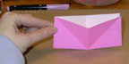

|
|
| Choose which side of your paper you would like to be the outside of your basket. Put the paper down in front of you with this side up. FOLD it from corner to corner and UNFOLD again. | |
| Turn your paper over and FOLD it, matching side to side, and UNFOLD again. | |
| Pick up your paper and hold it by the edges. |  |
| Push the edges toward the middle so your paper turns in to a square. | |
| Set down the paper on the table with the folds facing you and the opening facing away. TRACE or draw your own heart pattern on the paper and CUT it out. | |
| Grab the two points on the inside of your basket and pull them in so they overlap each other. | |
| The sides of the basket will pop out. Hold the basket here. | |
| Use a paper punch to PUNCH a hole through all of the overlapped layers in the top of the basket. | |
| CUT a ribbon and thread it through the hole. Tie it to make a loop. | |
| Fill your basket with valentine goodies and hang it for your valentine to enjoy! |